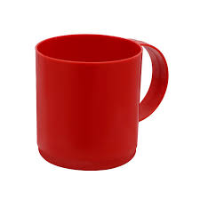

Типи чашок
Кераміка
Керамічні чашки відомі своєю довговічністю та теплозберігаючими властивостями, ідеально підходять для гарячих напоїв.

Скло
Скляні чашки елегантні та дозволяють насолоджуватися кольором напою, хоча потребують обережного використання.

Пластик
Пластикові чашки легкі та зручні для подорожей, але менш екологічні порівняно з іншими матеріалами.
